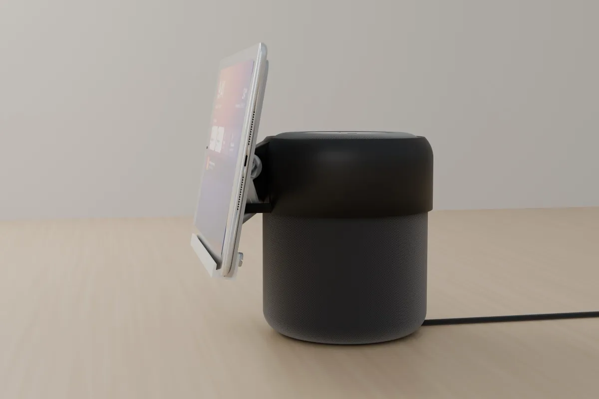
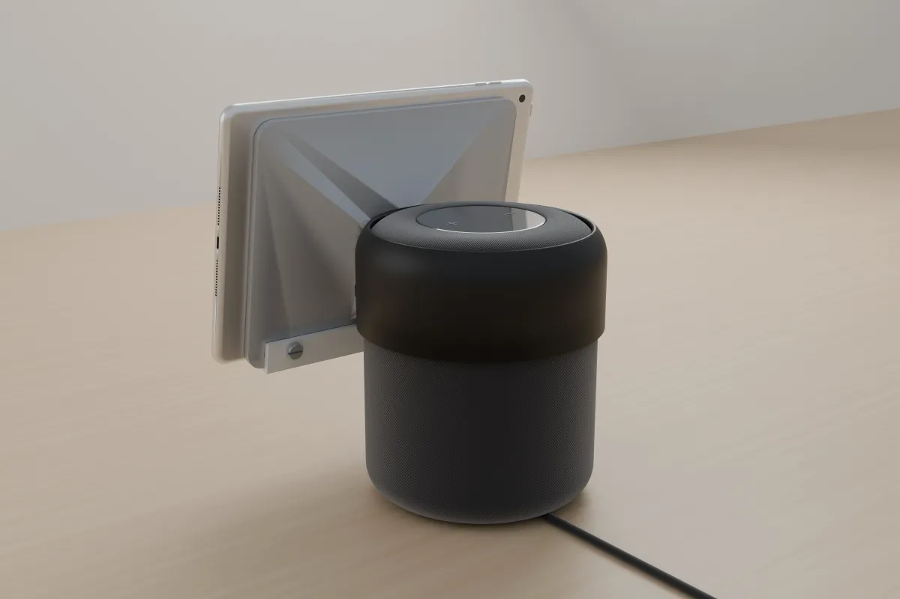
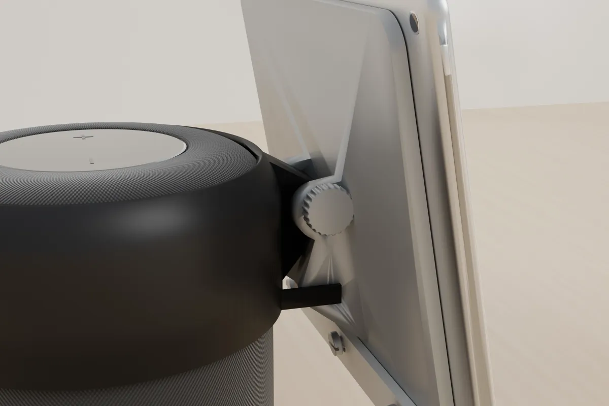
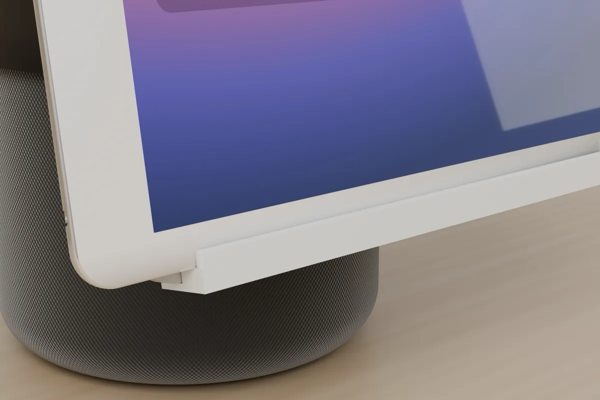

Why I Built This
Apple announced HomeView on 13 October. It is a 7 inch square screen sitting on a domed speaker, joined by a stainless steel hinge so you can tilt the screen. It costs $299 and comes to India on 13 November.1,2
A few days later a former colleague from my Xiaomi days asked me if I could do something about it. He has a first generation HomePod and an iPad Air 2. If the iPad hangs in front of the HomePod at the right angle, you get more or less the same thing.
So I designed a stand for the same. I had a few rules for it:
- It holds both devices and the pair should look like HomeView, not like an iPad propped next to a speaker
- It prints on my Bambu Lab X2D, which has a 256 x 256 x 260 mm bed
- No trip to the hardware store. Every part, including the screws, comes off the printer
The First Two Designs Did Not Work
The first version put the iPad above the HomePod, in portrait, on a spine rising from a domed base. It was 430 mm tall and looked like a tower. Nothing like HomeView.
The second version had a big domed base with the HomePod on it and the iPad sitting low in front. Honestly, it was useless. The position was wrong. On HomeView the screen hangs in front of the speaker, close to it, and that is the whole look.
That is when I dropped the base completely. The HomePod is 2.5 kg, heavy enough to be the base on its own. So the stand now starts at the top of the HomePod. A collar clips on, a short arm comes down in front, and the iPad hangs from a hinge on that arm, in landscape.
After that it was small changes. I moved the hinge to the centre of the plate that holds the iPad, so the iPad pivots around its middle. I also lifted the iPad a bit higher so the bottom edge floats above the table.
Try It in 3D
This is the actual model, not a mockup. Drag to turn it around, click and scroll or pinch to zoom, and move the slider to tilt the iPad. Turn off the devices to see only the printed parts.
The Collar
The first cap I made wrapped over the top of the HomePod. The inside of that dome needs supports to print, and I did not want supports on any part.
So I trimmed it. It now stops 45° up the HomePod's rounded shoulder, which makes it a collar instead of a cap. At 45° every overhang prints on its own, and the touch controls on top stay fully open.
The collar has a skirt that goes 30 mm below the hinge, with a 45° brace under the arm, again so it prints upright without supports. Inside there are 6 small dimples that press about 0.4 mm into the fabric and stop it from turning. The gap to the HomePod is 1 mm. If yours sits loose, a strip of thin felt inside fixes it.


The Hinge and the Five Clicks
I was a bit concerned about the hinge. A simple friction hinge works on day one, and then a few weeks later the iPad slowly nods forward. I wanted the user to be able to set an angle and trust it, in at least 5 stages.
So the collar has a thin flexible leaf on each side of the hinge, with a small bump on it. The holder has a matching dimple for every position. As you tilt the iPad, the bump clicks into the next dimple. There are 5 of them, at 5°, 10°, 15°, 20° and 25° of lean back. 10° is the default.
The hinge itself is an M8 bolt with a thumb knob and a nut, both printed. Print the bolt standing on its knob, and press the nut into the hex pocket on the right side. Tighten the knob just enough to take out the play. The clicks do the holding, not the bolt.

The iPad Holder and the Lower Lip
Printing the iPad holder is the hard part. It is a 200 x 164 mm plate with a shelf and a lip at the bottom, and that lip is an overhang whichever way you put it on the bed.
The fix was to stop fighting it. The holder prints flat on its front face. The lower lip, the bar the iPad stands on, is a separate part that prints standing on its shelf. It slides up under the holder and gets fixed with 3 printed M6 screws from the back. A coin or a flat screwdriver is enough.
I prefer screws over glue or snap fits here. If the lip breaks or I want a different one, I can swap it in a minute.
The iPad goes in landscape with the Home button on the right. The Lightning cable comes out on the right side, so it can run down behind the HomePod.

Parts and Print Settings
There are 6 different parts and 8 prints in total. Sizes are in mm.
| Part | Size (mm) | Colour | How to print |
|---|---|---|---|
| Collar | 150 x 170.5 x 61.1 | Black ABS | Upright, no supports |
| iPad holder | 200 x 164 x 28.8 | Silver ABS | Flat on its front face |
| Lower lip | 176 x 18.4 x 20.2 | White ABS | Standing on its shelf |
| Lip screws, M6 (print 3) | 11 x 11 x 11.7 | Silver ABS | Head down |
| Hinge bolt, M8 | 20 x 20 x 58.1 | Silver ABS | Standing on the knob |
| Nut | 15 x 13 x 6 | Silver ABS | Flat |
ABS needs the X2D's enclosure closed. Keep part cooling low, use a brim on the big parts, and turn on shrinkage compensation in Bambu Studio if your profile has it. ABS shrinks about 0.6%, which is why the collar has a 1 mm gap and parts that fit together have about 0.2 mm on each side.
The whole model is a Blender Python script with every size as a number at the top. That is also how the renders and the 3D viewer on this page are made, straight from the same file.
What It Does Not Do
This gets the look, not the product. I want to be clear about that.
- HomeView runs Apple's new home software, recognises up to 6 people and changes what it shows based on how far away you are.1 The iPad Air 2 tops out at iPadOS 15. It runs the Home app or a dashboard page, and that is it
- The HomeView screen is 7 inch and square. The iPad Air 2 is 9.7 inch and 4:3, so mine is a bigger screen on a smaller speaker
- HomeView is one device. Here they are still two, with two cables
For two devices that are already sitting at home, that is a fair trade.
What Is Next
The design is done and the renders on this page come from it, but I have not printed it yet. The first print is next, and then it goes to its new home. I want to check three things: whether the collar grips the fabric without felt, how the clicks feel after a few hundred tilts, and whether the holder warps when printed flat.
I will update this post with photos of the real print. If you have a first generation HomePod and want the files, tell me on X or LinkedIn.
You Might Be Wondering
Does this stand turn an iPad and HomePod into a real Apple HomeView?
No. It only gets the look and the placement. HomeView runs Apple's new home software, recognises faces and has its own speaker. Here the iPad runs the Home app or a dashboard page, and the HomePod plays audio as it always did.
Do I need any screws or hardware to build it?
No. The M8 hinge bolt with its thumb knob, the nut and the three M6 screws for the lower lip are all printed. You need a coin or a flat screwdriver to tighten the lip screws.
Will the HomePod tip over with an iPad hanging in front of it?
On paper, no. The first generation HomePod weighs 2.5 kg and the iPad Air 2 about 440 g, and the hinge sits close to the HomePod, so the HomePod works as the base. I will confirm this once the first print is done.
Can I use it with a HomePod 2 or a newer iPad?
Not as it is. The collar is sized for the first generation HomePod and the holder for the iPad Air 2 at 240 x 169.5 x 6.1 mm. The design is parametric, so other sizes are a change of a few numbers, but each one needs a test print.
Image Credits
All renders and the 3D model are my own, rendered in Blender Cycles. These are concept renders. The HomePod and iPad are modelled approximations, not the real devices.